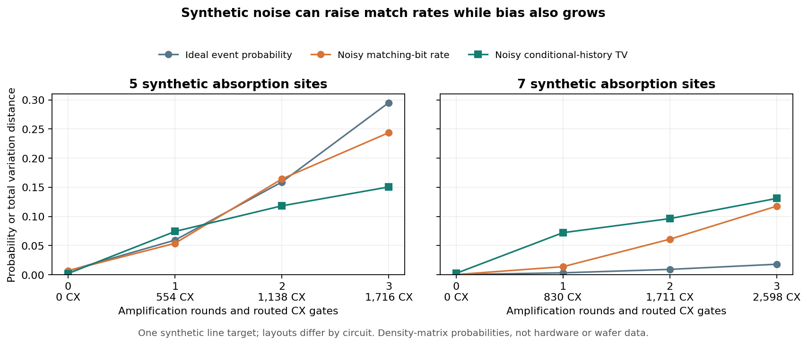
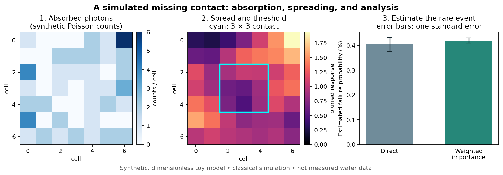
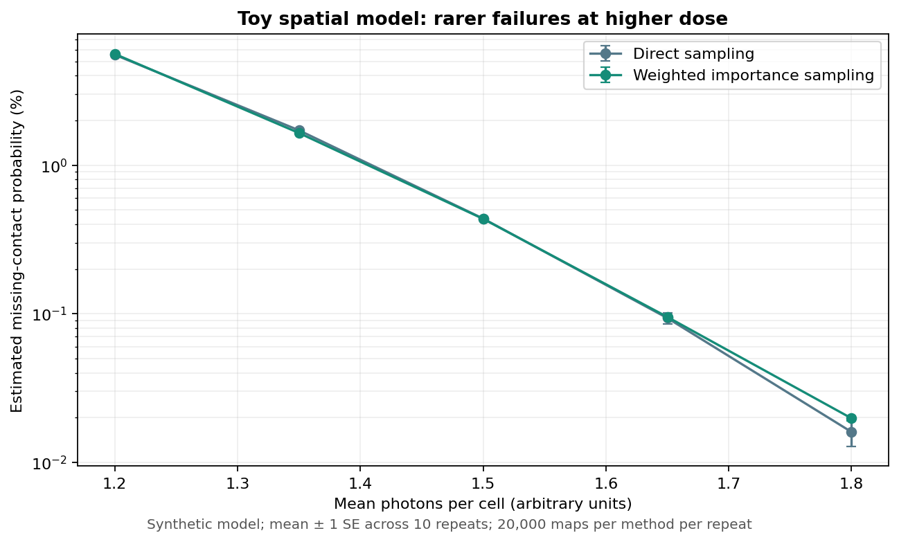

When a chip contact
doesn't print
Rare fluctuations can cause manufacturing defects. Explore a tiny model of a missing contact and see how a quantum algorithm could make simulated failure histories easier to sample.
A tiny exposure model
Imagine five independent absorption sites in one intended contact. If fewer than two absorb a photon, our toy rule marks the contact as missing.
Five possible absorptions
Simple threshold
Pass or fail
How often do we find a failure?
All three methods investigate the same toy process. These are raw hit rates, not equal-cost performance: quantum circuits require preparation, an oracle, and gates. The classical proposal needs weights for the original model.
Natural failure probability
Ideal amplified hit probability
Classical proposal hit probability
The classical proposal uses 30% absorption per site and reweights each history. Its raw hit rate is not the estimated manufacturing failure rate. Quantum amplitude amplification samples marked histories; it does not itself estimate that rate. For this simple toy, an exact classical sampler can also draw failure histories directly without rejection.
See the difference in 96 simulated shots
Orange squares are failure histories. Each click generates a new simulated batch.
Shots are sampled in this browser from the exact probabilities above. They are an illustration, not a Qiskit or hardware run. Sampling varies between batches.
A Qiskit check of the five-site example
For the fixed default case—80% absorption and one amplification round—a separately executed ideal Qiskit statevector circuit agrees with the probabilities above. The live controls use an exact formula; they do not run Qiskit.
Event probability, ideal circuit
Five synthetic absorption sites
Generic u/CX compilation · depth 449
Counts include state preparation, the explicitly enumerated six-history oracle, and reflections. They exclude hardware routing, noise, shots, and error correction. This is an ideal simulator result, not a quantum hardware run.
Where quantum fits
A quantum circuit can prepare a superposition of model histories, mark the missing-contact histories, and amplify them. In this ideal example, the relative probabilities among marked histories are preserved. Actual circuit preparation, oracle, gates, noise, and sampling all have costs.
What this does—and doesn't—show
This five-site threshold is not a calibrated EUV process or a real manufacturing result. It omits absorption statistics beyond one bit per site, electron cascades, chemistry, spatial correlations, and process variation. We have not demonstrated a quantum advantage or built a photonic quantum processor.
Context: IBM: stochastic variation in EUV patterning · Siemens: importance sampling for missing vias · IBM: quantum state-preparation costs
A stronger classical baseline and a noise test
For this special independent-site model, we can compute the conditional distribution exactly and draw a matching history directly on a classical computer, without discarding complete histories. That shortcut relies on the toy's simple structure and does not solve the spatial model below.

Density-matrix simulation under one synthetic line-target noise model; layouts vary. More matching outcomes do not necessarily mean more faithful conditional histories. No QPU was used.
A separate spatial experiment
This classical simulation replaces the five-site circuit model with a 7×7 grid of random photon counts, simple spreading, and a contact threshold. It is still synthetic and uncalibrated. The chart compares two estimates of the same model's failure probability; the error bars show one estimated standard error.

Scroll the figure horizontally on narrow screens. The spatial and quantum examples use different models. A reversible quantum circuit for this 7×7 process has not been built. Figure: 50,000 synthetic maps per method, seed 77.
Explore a dose sweep
In this toy model, more mean photon counts reduce the chance of falling below its fixed threshold. This does not account for the other real process tradeoffs associated with dose.

Classical synthetic experiment; ten repeats of 20,000 maps per method and setting. Bars show one standard error of the repeat mean. No measured wafer data or quantum execution.